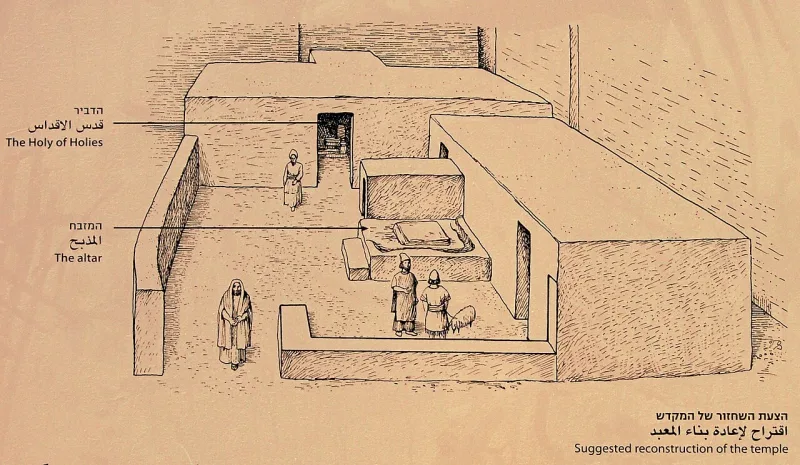
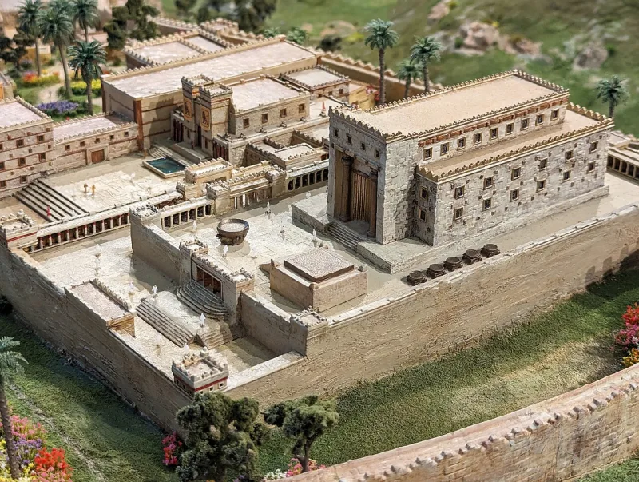
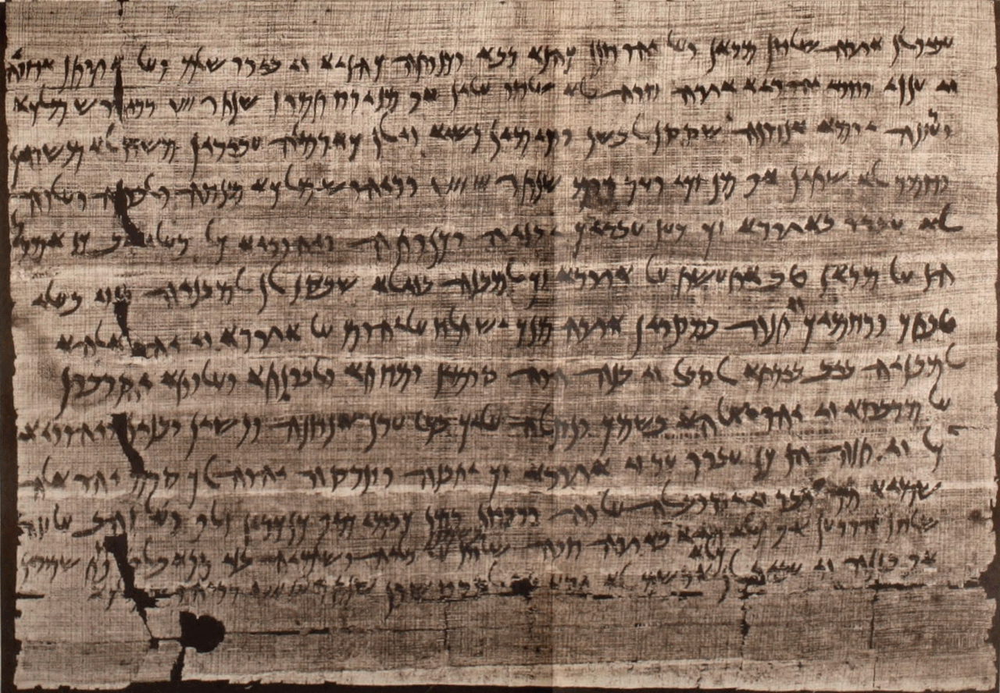

LDS scholars have a real answer here. Say so before your friend does.
Nephi builds a temple "after the manner of the temple of Solomon" at 2 Nephi 5:16. Later there are temples in several cities — Alma 16:13, Alma 26:29, Helaman 3:9 and 3:14.
Deuteronomy 12:5-14 confines sacrifice to "the place which the LORD your God shall choose." After Solomon that meant Jerusalem alone, as 1 Kings 8:29 assumes. And Josiah's reform, within living memory of Lehi leaving, had destroyed the rival sanctuaries — 2 Kings 23:4-20.
FAIR points to real Jewish temples outside Jerusalem. The sacrificial temple at Elephantine in Egypt.
The sanctuary at Arad. Leontopolis later.
So Jews far from Jerusalem did build temples. FAIR argues the centralisation command applied inside the land of Israel, not to a colony cut off across an ocean.
Genuinely arguable, and this is a minor one. Elephantine and Arad are archaeological facts and they blunt the word unthinkable.
The remaining point is narrow. Those sites are judged irregular against the law.
The Book of Mormon presents its temples as fully legitimate.
"Deuteronomy 12 says one place. How did Nephi read that?"



Jews did build temples far from Jerusalem. Elephantine and Arad were dug up.
FAIR points to Jewish temples outside Jerusalem, from Lehi's own time or soon after. There was a temple with sacrifice at Elephantine in Egypt. There was a sanctuary at Arad. Leontopolis came later. So Jews far from Jerusalem did in fact build temples.
FAIR argues that the one-place rule of Deuteronomy 12 applied inside the land of Israel. It did not bind a group cut off from that land across an ocean.
On that reading Nephi's temple is what a devout but permanently separated colony would do.
A minor one: the digs are real, but those altars were judged irregular.
Elephantine and Arad are real sites, dug up and dated. They blunt the claim that this was unthinkable.
But scholars judge those altars irregular against the law of Deuteronomy. The Book of Mormon presents Nephite temples as fully proper.
So the clash with Deuteronomy 12 stands as a matter of law, even though the practice has precedent in history.